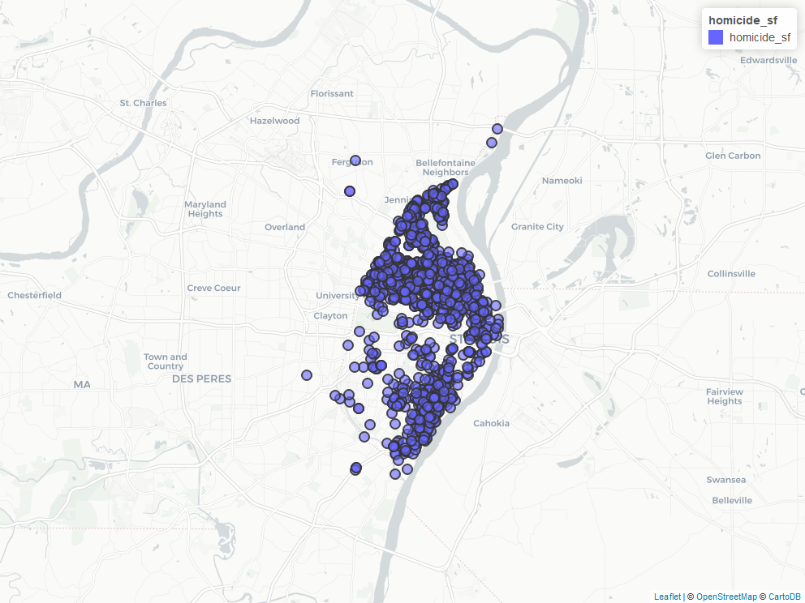

vignettes/censusxy.Rmd
censusxy.RmdThe censusxy package is designed to provide easy access to the U.S. Census Bureau Geocoding Tools in R.
There do not exist many packages for free or reproducible geocoding in the R environment. However, the Census Bureau Geocoding Tools allow for both unlimited free geocoding as well as an added level of reproducibility compared to commercial geocoders. Many geospatial workflows involve a large quantity of addresses, hence our core focus is on batch geocoding.
The U.S. Census Bureau makes their geocoding API available without any API key, and this package allows for virtually unlimited batch geocoding. Please use this package responsibly, as others will need use of this API for their research.
The easiest way to get censusxy is to install it from CRAN:
install.packages("censusxy")Alternatively, the development version of censusxy can be accessed from GitHub with remotes:
# install.packages("remotes")
remotes::install_github("slu-openGIS/censusxy")Since the package does not need sf for its basic functionality, it is a suggested dependency rather than a required one. However, many users will want to map these data as sf objects, and we therefore recommend users install sf. Windows and macOS users should be able to install sf without significant issues unless they are building from source. Linux users will need to install several open source spatial libraries to get sf itself up and running.
The other suggested dependencies that users may want to consider installing have to do with parallel processing. As with sf, it is not necessary for users to take advantage of this functionality to use censusxy. If you do want make requests to the Census Bureau’s API in parallel, you will need doParallel as well as foreach.
If you want to use these packages, you can either install them individually (faster) or install all of the suggested dependencies at once (slower, will also give you a number of other packages you may or may not want):
## install sf and/or parallel packages
install.packages("sf")
install.packages(c("doParallel","foreach"))
## install all suggested dependencies
install.packages("censusxy", dependencies = TRUE)One of the biggest drawbacks of the Census Bureau’s geocoders is their availability and speed. Users of censusxy have reported issues to us where censusxy appears not to work on their computers. Generally speaking, the issues are with servers on the Census Bureau’s end. If you notice that the package does not seem to be working, take a break for a few hours and try again. You will hopefully find that your code, with no changes, executes correctly and returns geocoded data. If you notice continued issues, please do not hesitate to open an issue for us to investigate.
Another performance issue with censusxy relates to speed. The issue, generally speaking, is not within the package itself but rather with external factors. These include your computer’s processing power, the quality of your internet connection, and - most importantly - the speed that the Census Bureau’s servers process your request. We have taken two steps to improve censusxy’s performance over using the Census Bureau’s geocoding web interface. The first is that we extract unique addresses in your data and only send those for geocoding. Thus, a large geocoding job may shrink considerably if it contains repetitive addresses.
The second step we take is to break your data into “chunks” if you have more than 1,000 records. This is below the maximum number of rows that the Census Bureau accepts for geocoding. censusxy sends these as separate geocoding requests before putting your data back together when geocoding is completed. One of the biggest things you can do to improve the performance of censusxy is to utilize our optional parallel processing features, which may require the installation of extra packages (see the Installation section above and the description of parallel processing below). When parallel processing is used, these chunks of data can be sent out simultaneously for geocoding.
A third performance issue with censusxy relates to the quality of input data. Street addresses that are not formatted according to USPS standards may cause an entire “chunk” of data to be returned without being geocoded. If you notice many NA values for location, check a few with the single line geocoder:
censusxy::cxy_single("3700 Lindell Blvd", "St. Louis", "MO", 63139)If you get invalid data back, or an error like The server, while working as a gateway to get a response needed to handle the request, got an invalid response, there is something wrong with your specific address. One thing to watch for are non-ASCII characters, such as Lindèll in the example below:
censusxy::cxy_single("3700 Lindèll Blvd", "St. Louis", "MO", 63139)This will return the error described above or an NA for cxy_status if you are using cxy_geocode().
If you get valid data back from the API with cxy_single(), it is more than likely that another address in the same “chunk” has a formatting problem that is causing errors. Pre-processing your data to eliminate problematic addresses (such as those that contain point of interest information or non-ASCII characters) can help eliminate this problem.
Another strategy is to break up your data into smaller chunks prior to sending it to be geocoded. Then, geocode these chunks individually to try and isolate the problematic addresses. For example, we can use the following base functions to create chunks of \(n = 200\) observations:
These could then be passed individually to cxy_geocode() using batches[[1]] and so on.
The Census Geocoder contains 4 primary functions, 3 for single address geocoding, and 1 for batch geocoding. For interactive use cases, a Shiny application for example, the single line geocoder is recommended. For large quantities of addresses, the batch endpoint is favorable. If your use case is locating coordinates within census geometries, only a single coordinate function is available for this task.
If you are interested in census geometries (composed of FIPS codes for state, county, tract and block), you should specify ‘geographies’ in the return argument. This also necessitates the use of a vintage.
Vintage is only important to consider if you would like Census geographies to accompany your coordinate data. It has no impact on geocoding coordinates (location). You can obtain a data frame of valid benchmarks and vintages with their respective functions. For vintages, you must supply the name or ID of the benchmark you have chosen.
# return benchmarks
cxy_benchmarks()
# return vintages
cxy_vintages(benchmark = 'Public_AR_Current')If you would like to return data including Census geographies, set return to "geographies".
Setting a specific benchmark can also be used to reproduce geocoding results. Changes to the data the Census Bureau supplies for geocoding may mean that the specific coordinates returned for a given address are modified. Using the latest benchmark may mean that addresses geocoded earlier are returned at a different coordinate. Using benchmarks allows you replicate earlier geocodes.
If you are not concerned about Census geographies or being able to reproduce the exact coordinates for each supplied, the functions will default to the latest benchmark.
This is an optional set of tools to take advantage of multiple threads if your computer has a multi-core processor. The parallel argument can be used to specify the number of cores you would like to dedicate to geocoding tasks. Once you execute the function, your batch geocoding request will be automatically distributed across your cores to return results faster. The function will not allow you to specify more cores than are available, and will instead default to the maximum number of available cores.
Since this is optional, there are additional dependencies that are not automatically installed. See the installation instructions above for details on ensuring your R environment is ready for parallel processing.
Users on macOS should note that there have been issues reported with using the parallel argument on macOS v12.4. Users with this specific operating system version may experience the following error if parallel is greater than 1:
The process has forked and you cannot use this CoreFoundation functionality safely. You MUST exec().
The process has forked and you cannot use this CoreFoundation functionality safely. You MUST exec().
Break on __THE_PROCESS_HAS_FORKED_AND_YOU_CANNOT_USE_THIS_COREFOUNDATION_FUNCTIONALITY___YOU_MUST_EXEC__() to debug.
Break on __THE_PROCESS_HAS_FORKED_AND_YOU_CANNOT_USE_THIS_COREFOUNDATION_FUNCTIONALITY___YOU_MUST_EXEC__() to debug.
Error in parallel::mclapply(batches, batch_geocoder, return, timeout, :
The operating system returned a parallel processing error - see censusxy's website for more information.We will update the package documentation again if this issue persists beyond macOS v12.4 and/or the next release of R (which includes the parallel package). In our testing, we have noticed that this behavior occurs inconsistency, and we have been able to successfully execute our code after restarting our R session.
There are two options for class, which governs the type of object censusxy returns. By default, a "dataframe" is returned. However, users may optionally set class to "sf", which will return the results as an sf object. Doing so allows for an immediate preview of your data on a map and for these data to be exported in a geospatial format, like .geojson or .shp. However, returning an sf object will mean that censusxy can only return addresses successfully matched by the geocoder. A helpful message denoting how many rows were removed will print in the console.
Since returning an sf object is optional, there are additional dependencies that are not automatically installed. See the installation instructions above for details on ensuring your R environment is ready for parallel processing.
You may also specify output as "simple" or "full". Simple returns only coordinates (and a GEOID if return = "geographies") and this is suitable for most use cases. If you desire all of the raw output from the geocoder, please specify full instead.
The function contains an argument for timeout, which specifies how many minutes until the API query ends as an error. In this implementation, it is per 1000 addresses, not the whole batch size. It is set to default at 30 minutes, which should be appropriate for most internet speeds.
If a batch times out, the function will terminate, and you will lose any geocoding progress.
Be cautious that batches taking a long time may allow your computer to sleep, which may cause a batch to never return. macOS users may find the app amphetamine useful.
If you plan on using the single address geocoding tools, your data do not need to be in any specific class. To use the batch geocoder, your data must be in a data.frame (or equivalent class). This package provides data on homicides in St Louis City between 2008-2018 as example data in two forms - a small table with 24 addresses (stl_homicides_small) and a larger table with more records (stl_homicides)
For use of the batch API, your address data needs to be structured. Meaning, your data contains separate columns for street address, city, state and zip-code. You may find the postmastr package useful for this task. Only street address is mandatory, but omission of city, state or zip code drastically lowers the speed and accuracy of the batch geocoder.
In this example, we will use the included stl_homicides_small data, which we loaded above and assigned to the object df, show the full process for batch geocoding with cxy_geocode():
df_sf <- cxy_geocode(df, address = "street_address",
city = "city",
state = "state",
zip = "postal_code",
class = "dataframe")Since we have selected "dataframe" for our class, all input addressed will be returned. If you use class = "sf" (and have sf installed), you will receive only matched addresses.
df_sf <- cxy_geocode(df, address = "street_address",
city = "city",
state = "state",
zip = "postal_code",
class = "sf")Though sf objects only returned matched addresses, one advantage of using this optional set of features is that output returned as an sf object can be previewed with a package like mapview:
mapview::mapview(df_sf)
Note that, like sf and the parallel processing dependencies, mapview is a suggested package and must be installed separately (or by using install.packages("censusxy", dependencies = TRUE)).
If you have individual addresses you would like to geocode, there are two additional functions to be aware. cxy_single() can geocode a single address that has already been parsed into separate entries for street, city, state, and zip:
cxy_single(street = "20 N Grand Blvd", city = "St. Louis", state = "MO", zip = 63103)Alternatively, you can pass un-parsed addresses using cxy_oneline(). This example returns Census geography data along with the default location information:
cxy_oneline(address = "3700 Lindell Blvd, St. Louis, MO 63108", return = "geographies", vintage = "Current_Current")Finally, if you know pairs of coordinates but would like to find out what Census geographies they fall within, you can use cxy_geography():
cxy_geography(lon = -90.23324, lat = 38.63593)This function is useful for a small number of addresses, but returns a significant amount of data for each point location. If you have a large number of points and need a specific value like county or congressional district, using tigris to obtain those data and then sf::st_intersection() to perform a spatial join will be a more effective solution that performs this task faster and results in clearer output.
For a handful of addresses, you may want to iterate using these functions. Two examples using base R are provided here:
addresses <- c("20 N Grand Blvd, St. Louis MO 63103", "3700 Lindell Blvd, St. Louis, MO 63108")
# with a loop
geocodes <- vector("list", length = 2)
for (i in seq_along(addresses)){
geocodes[[i]] <- cxy_oneline(addresses[i])
}
# with apply
geocodes <- lapply(addresses, cxy_oneline)R itself, welcome! Hadley Wickham’s R for Data Science is an excellent way to get started with data manipulation in the tidyverse, which censusxy is designed to integrate seamlessly with.R, we strongly encourage you check out the excellent new Geocomputation in R by Robin Lovelace, Jakub Nowosad, and Jannes Muenchow.censusxy, you are encouraged to use the RStudio Community forums. Please create a reprex before posting. Feel free to tag Chris (@chris.prener) in any posts about censusxy.reprex and then open an issue on GitHub.